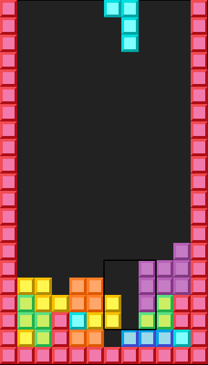
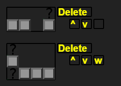
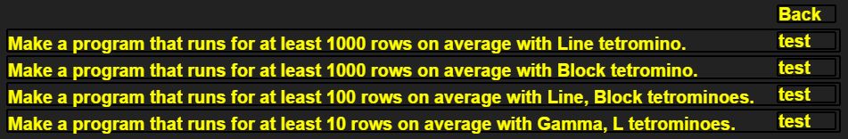
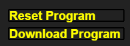

Tile Machine Tutorial
To launch the game, open TPM.html in Google Chrome. It might work in other browsers, but I didn't test it.
Game rules
In Tile Machine you teach the computer to play the Game of Falling Tetrominoes.

The essence of this simple tile game is that a random tetromino (a figure that consists of four square tiles) appears at the top of a rectangular stack, and the computer chooses the position and the rotation of that tetromino. After that, the tetromino falls down and lands on top of other tetrominoes that appeared earlier. If, as a result of that, one of the rows becomes full, that row is cleared.
Your task is to teach the computer to choose the rotation and the position wisely by providing patterns that can appear on the playing field. Together with each pattern you say where to put the tetromino, if that pattern occurs.

Gray tiles in this image are the pattern. Green tiles show the proper place for the tetromino.
Program execution
When the program is run, the game recognizes the pattern if it occurs in some region of the field

and puts the tetromino into the specified place.

There are three possible states for each tile in a pattern: a filled tile, an empty space, and a question mark.

For a region of a field to match a pattern, each tile that is full in the pattern should be full in the region, and each tile that is empty in the pattern has to be empty in the region. Question mark tiles can be either, they don't impose any constraints on the region.
Each tetromino has its own set of patterns. To switch between tetrominoes, use tetromino buttons in the right part of the screen.

When the program is run, Tile Machine simulates the Game of Falling Tetrominoes, which involves generating random tetrominoes sequentially. To handle each tetromino it looks at the set of patterns corresponding to that tetromino. It starts from the top and tries to find an occurence of a pattern in the field. If there are no occurences, it proceeds to the next pattern. If there are, it stops going through the list of patterns and uses the current pattern. It doesn't look at the patterns below it.
There are some subtleties about how a pattern is handled. First, it can match several regions of the field. In that case the game picks the lowest region. If there are several places at the same height, it picks one randomly. Second, it is possible that a region matches the pattern, but if the tetromino is dropped according to that pattern, it won't land in the place where it is expected to land. Such regions are dropped from consideration.
Interface
Programming screen
1. The "Download Program" button creates a program.txt file and sends it to your Downloads folder. You can open it later by using the "Choose File" button at the bottom of the page.
2. If there are too many patterns, they will go out of canvas. You can scroll the list with the wheel of your mouse.
3. The empty button next to the arrow buttons and below the Delete button in the list of patterns can be toggled.

If there is a 'w' inside it, blocks of the corresponding pattern can be matched by the "walls" (the red blocks around the playing field). In the following example the middle block in the left column of the pattern is matched by a tile in the wall.
4. Before testing the program, turn on several tetrominoes. The tetrominoes that are off will never appear in the game.

Testing screen
5. The "Get Stats" button runs the game without drawing it. It counts the minimal, the maximal and the average number of lines deleted in a game. It also saves the lamest games (the ones with the smallest number of deleted lines). The number of polyominoes dropped in such run is specified by the variable sampleSize in the very beginning of game.js. It is 50000 by default. The lamest game threshold is specified by the variable sizeOfLamestGames. It is 10 by default. That is, all games in which fewer than 10 lines were deleted, will be saved as the lamest games. The simulation can run for a while, depending on your computer. It will also freeze the tab while running.
6. To load a lamest game, press the "Lamest Games" button. To play back the game, press the "Next Tetromino" button repeatedly. There are two buttons with the name "Next Tetromino". You need the one that is next to the "Lamest Games" button. The one at the bottom generates random tetrominoes.
7. Matched regions are highlighted by rectangles. Red rectangles are the regions that were matched but got removed because the tetromino couldn't land at the place where you expected it to land. Yellow rectangles are the ones that were removed because they aren't the lowest ones. Gray rectangles are the optimal ones. The game picks one of those randomly. The black rectangle is the one that is picked.
Challenges
To get started, try to beat a couple of challenges. These usually involve fewer than the full set of 7 tetrominoes, and only require the program to run for some time, not forever.

Program storage
The program is saved automatically after each change. It is stored locally in the browser and will persist when the tab is closed or refreshed. If you would like to start over with an empty program, you can reset the program. The copy that is stored in the browser's memory will be deleted. If you would like to keep that program, you can download it as a text file. Use the buttons in the lower right corner of the programming screen.
